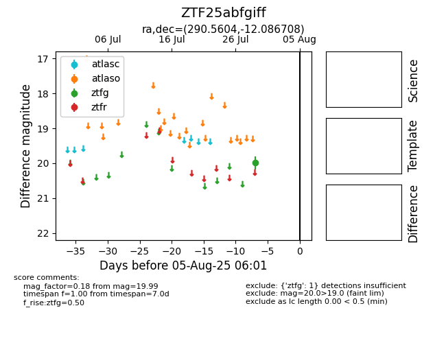

Target ZTF25abfgiff at 2025-08-05 06:01, see:
FINK: fink-portal.org/ZTF25abfgiff
Lasair: lasair-ztf.lsst.ac.uk/objects/ZTF25abfgiff
ALeRCE: alerce.online/object/ZTF25abfgiff
alt names
ZTF25abfgiff (ztf,fink)
coordinates:
equatorial (ra, dec) = (290.5604,-12.08671)
galactic (l, b) = (25.4880,-12.24519)
photometry
last ztfg=19.99
1 ztfg detections
